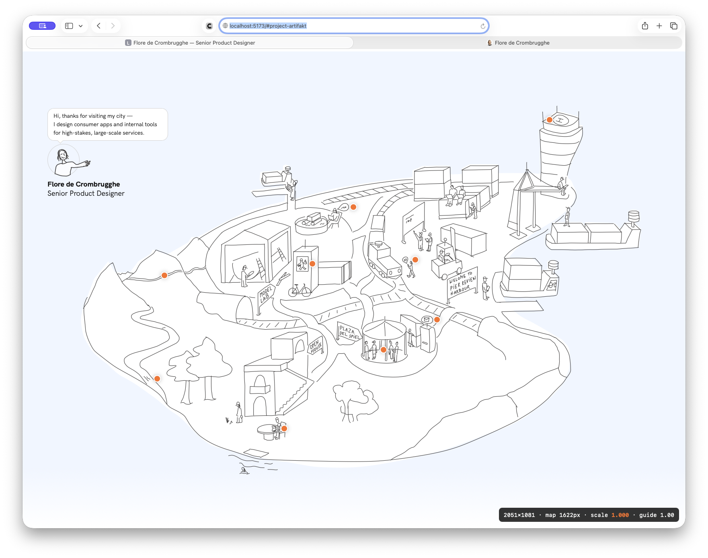
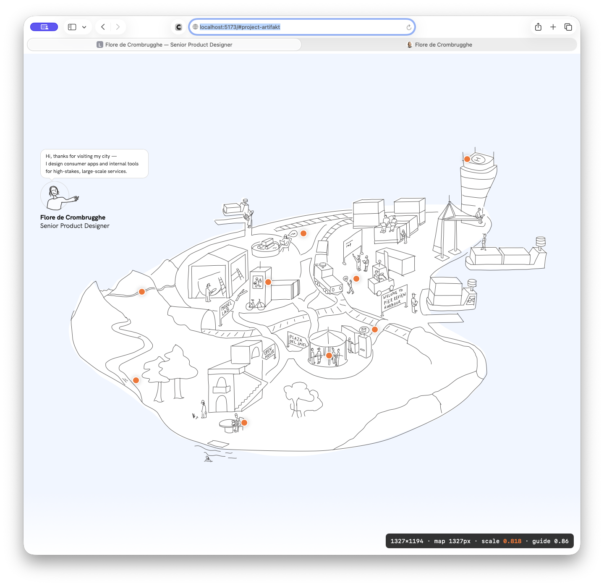
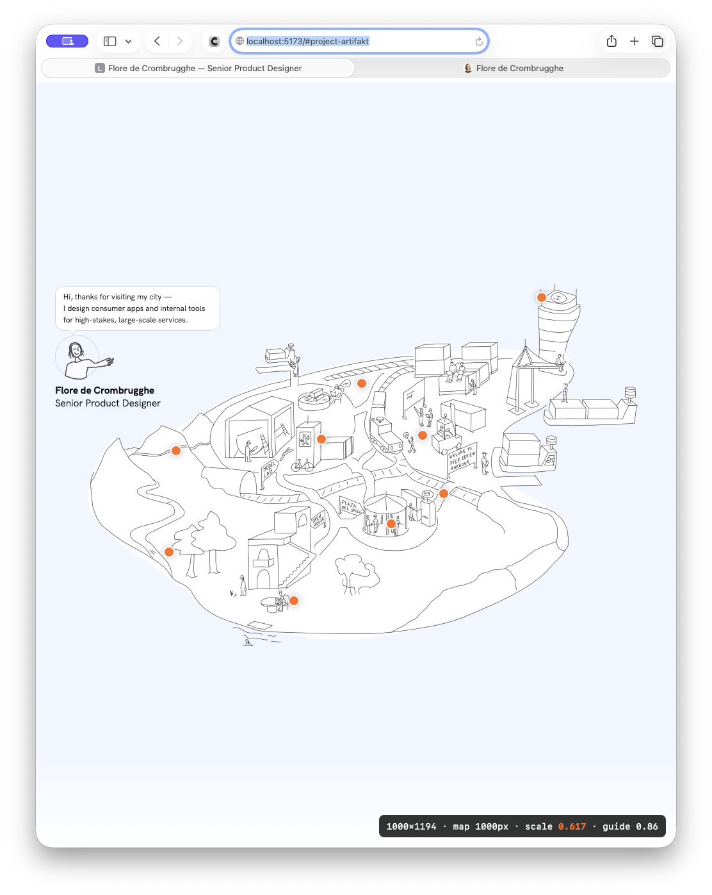
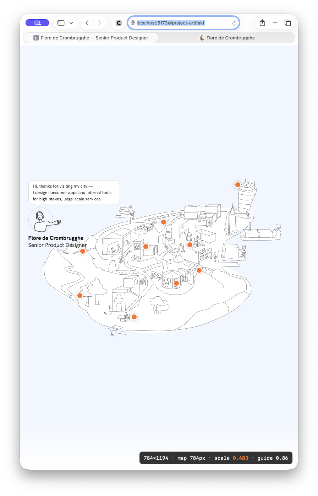
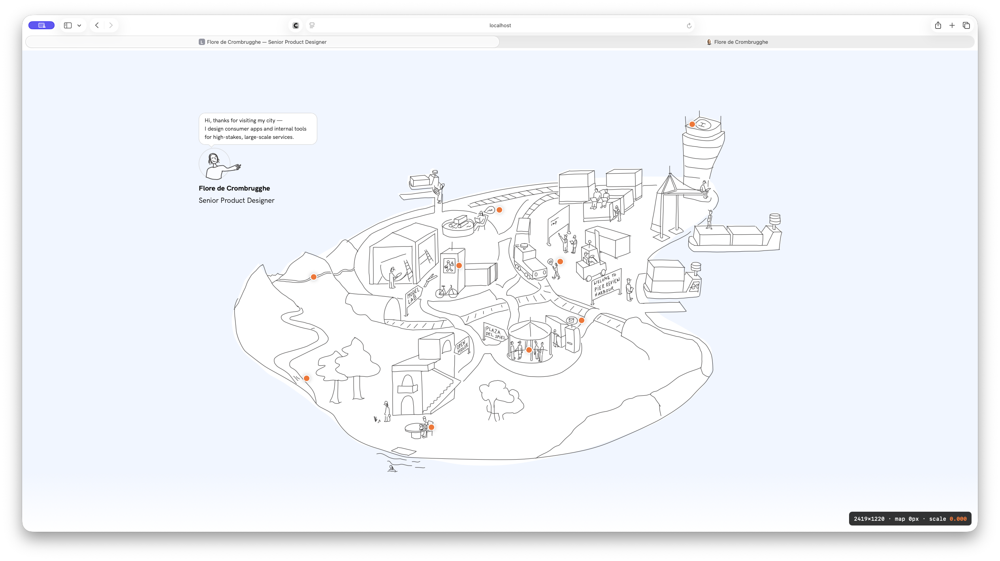
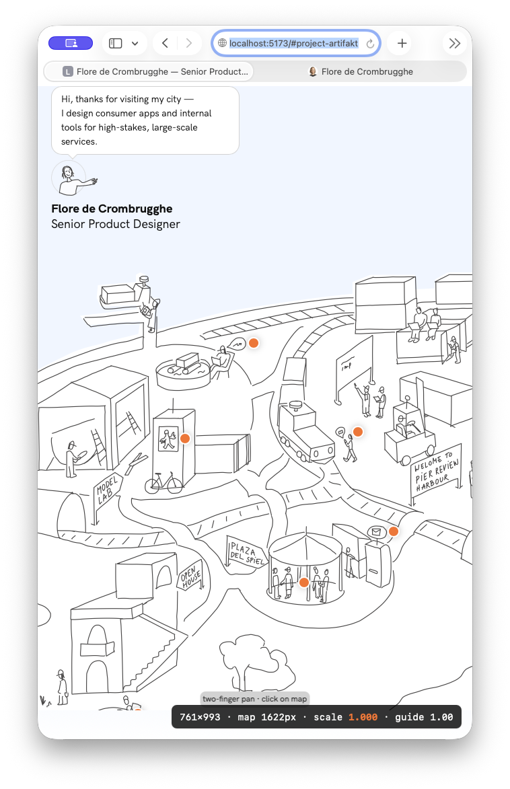
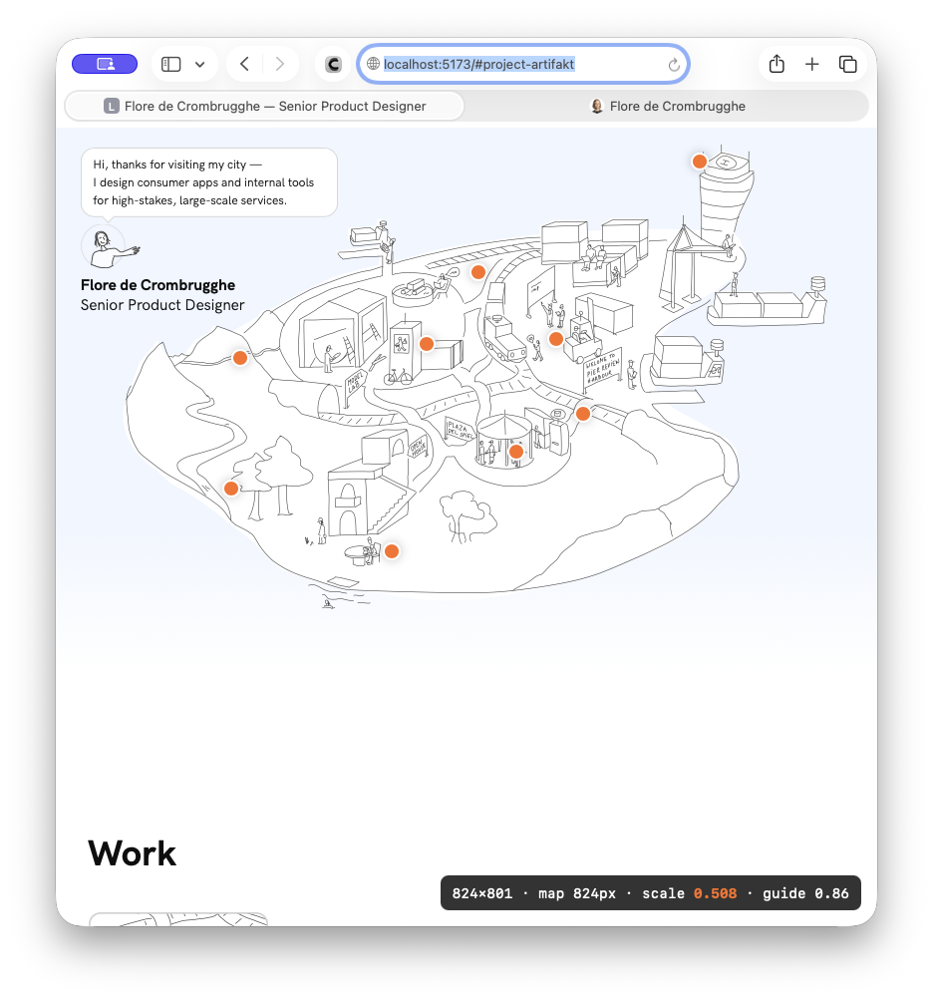

The homepage had components but no system beneath them — sections were spaced with whatever Tailwind default looked fine, and the card grids were invented rather than measured. This session pulled the real layout system out of Figma, finished the card media, and then spent the second half on the map, which turned out to be solving the wrong problem entirely.
Layout
Two column grids, not one. Work uses a different column count and gutter from Approach/About.
Confirmed deliberate rather than drift: project cards get more air than the smaller editorial cards. Both are real layout grids declared in the Figma frames — the mistake was ever inferring them from card widths.
Layout
Container padding is fluid (clamp), not stepped through breakpoints.
Not a neatness choice. With breakpoint steps the inner content width ran backwards at each one — 1215px at a 1279 viewport, then 1184px at 1280. Content getting narrower as the window widens reads as a bug. A clamp can't do that.
Layout
Approach and About stay staggered collages on desktop, collapse to a plain grid below.
The Figma layout is hand-placed cards with vertical offsets, not a grid. Those offsets have nowhere to go on a narrow viewport, so they only survive where the container is a known fixed width.
Cards
The artwork inside a project card isn't inset by padding — the "inset" is the tinted background showing around it.
This is why the media frames looked unfinished for weeks. The missing piece was colour, not spacing. Once the per-project tints were wired, the frames read as finished without touching a single spacing value.
Cards
Card order now comes from an explicit order field per project.
Found while checking something else: all three Work groups were in the wrong order because nothing had ever encoded reading order, so they'd been coming out alphabetically by filename.
Map
The map scales to fit instead of cropping — and the constraint is viewport height, not width.
The old rule cropped anything narrower than the map's own width, which is wider than any real laptop. But at 1500×820 the width is 92% adequate — it's the 820px height forcing the map down. Width had never been the right thing to switch on.
Map
Scale the image with CSS width/height, never transform: scale().
A transform scales the hotspots' 44×44 tap targets along with the artwork — 33px at 0.75, under the accessibility minimum. Resizing the image leaves the hotspots as fixed-size elements positioned by percentage, so the minimum survives for free.
Map
The hero is as tall as the map needs, not as tall as the viewport.
Full-viewport height centred the map vertically, parking a band of dead canvas above it and pushing the next section off screen entirely. Now how much of Work shows through falls out of the window's own height and ratio.
Map
The Guide's overlay-vs-stacked behaviour needed no fix at all.
The empty band at the top-right looked like a z-index problem. It wasn't — the Guide only stacks above the map in the crop branch, where it claims a full row and uses a third of it. Once a 1500px laptop fits instead of cropping, it gets the overlay back and the band disappears.
Map
Removed a scale transform on the Guide — it had been setting mobile type sizes by side effect.
It looked like an avatar-sizing change. It was scaling the whole group, so the speech bubble's 14px was painting at 12 and the name and role at 15.5. An undocumented mobile type scale, living in a container transform where nobody would look for it.
Rather than trading screenshots and adjectives about whether the map "felt too small", the build got a temporary dev-only readout in the corner showing viewport size and computed scale. Flore then dragged her window narrower and watched the number. Taste became a number in a single pass, and the screenshots below are that drag.
scale 1.000

Starting point — the map at its native size. Note the dead space above it: the hero was still filling the viewport and centring the map inside it.
scale 0.818

Still comfortable — the whole map visible, no pan needed. This is the size a real laptop lands on, and the size that used to crop.
scale 0.617

Getting tight — the illustration still reads, but the Guide is starting to take up a noticeable share of the map.
scale 0.483

The real problem shows up — at roughly iPad-portrait width the speech bubble is competing with the city rather than introducing it. Not a scale problem: the bubble has a fixed width, so it never shrinks with anything around it.
The floor is still unset. The readout stays in the build until it's decided, then comes out. It's dev-only and already confirmed absent from the production bundle — worth noting because it appears in every screenshot here and won't exist in the shipped site.
bug

The readout lying — map 0px · scale 0.000. Its observer subscribed once on mount, so after a hot reload it was measuring an element that no longer existed. A measuring instrument reporting zero rather than failing loudly.
before

Phone branch, no breathing room — removing the full-height hero left the Guide hard against the top edge. On desktop the map's own artwork carries whitespace so it read fine; at this size that whitespace scales away too.
after

Hero sized to the map — top-aligned with 24px of air, whole map visible, and the Work section now peeking into view. Previously nothing of the next section showed at all.
This is the meta-knowledge worth keeping, because it's about how to set the file up so it can be read by someone building from it, not about this site specifically.
Declare grids, don't imply them
Work's card widths happened to fit two different column counts at the same gutter. A pass "corrected" the right reading into the wrong one and every span came out doubled. Identical pixels, unreconcilable numbers.
Edit components, not instances
The badge restyle was made on an instance in the Badges section, so every real card in the file still showed the old treatment. The file quietly disagreed with itself.
Values live in the file, never in the doc
The rule added yesterday earned itself again: the wayfinding colour was still specified in the handover doc, three sections below the rule forbidding it. That bug is still on the built page.
Pull whole components
Trying to be economical with partial pulls cost more than one complete pass would have — several rounds of missing fields that a full read would have caught immediately.
| What happened | Resolution |
|---|
| Changes appeared not to land — the page kept showing an older version |
Two dev servers were both holding the same port: one bound to IPv6 loopback, one to all interfaces. Neither failed, and the OS routed localhost to the older one. No amount of reloading or cache clearing would have helped. |
| Spacing utilities silently doing nothing |
A Tailwind config change never reached a dev server that had been started before the edit. The classes existed in the markup and resolved to normal. |
| Captions clipped at narrow widths |
aspect-ratio makes a box's height exact, so longer content simply overflows and gets cut. Replaced with a ratio spacer that sets a minimum instead. |
| Artwork consistently ~0.4% too narrow |
The frame's border was shrinking the box that the artwork's percentage widths resolved against. Moved the border to an overlay so it doesn't participate in layout. |
Shareable hook
I asked for the avatar on my map to shrink on smaller screens. It did — and it quietly took my entire mobile type scale with it. A one-line CSS transform on a container had been setting my speech bubble to 12px and my name to 15.5px, sizes I never chose and couldn't find anywhere in my type styles. The lesson isn't "don't use transforms": it's that when a value doesn't live where you'd look for it, you don't discover it's wrong — you discover it's
there, months later, wondering who decided that.